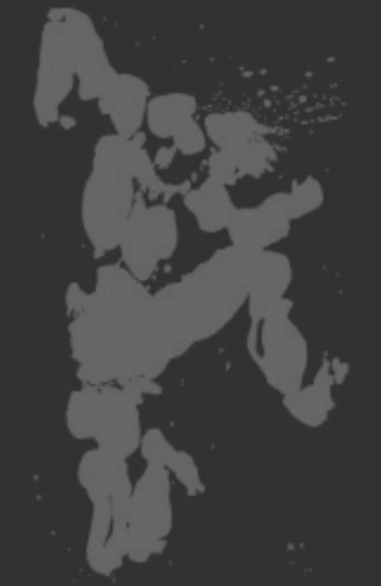

. . . he felt an excruciating pain in his back. He ran. He sped up his metabolism as hard as he could and he ran desperately. It didn't occur to him to turn towards his attacker and confront her, because he didn't know how to attack or how to defend himself.
He was hounded by the maddened buzzing of the Hive, while he kept on receiving blows from all sides, in an attack he couldn't understand. He fell to the ground, and he didn't even try to stand up, as he realised in desperation there was nothing he could do to prevent his own destruction.